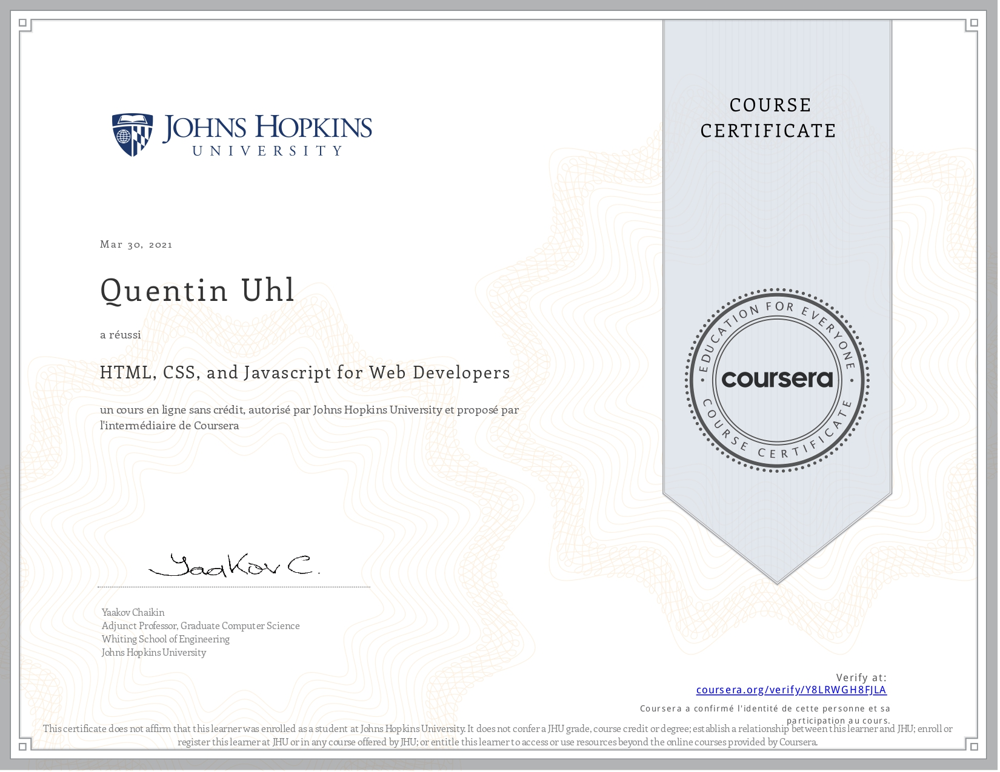

Development of this website
From initial idea to implementation and launch
Development of This Website
My adventure began during an internship at CNES, where I took a coding course aimed at developing a site to collect vocal data. This data was intended to train an offline AI for language recognition, specialized in a particular task—this was a time before the existence of Whisper in 2021. The online course provided by Yaakov Chaikin, a professor at John Hopkins University, laid the foundation for my HTML/CSS/Javascript coding skills.
In December 2022, with the release of ChatGPT, I discovered its potential in optimizing and shaping a website. This revelation came as I was experimenting with various prompts, realizing that it could be an invaluable tool in designing a web platform to showcase my side projects alongside my PhD work. These projects included innovations with the prosthetic hands and EEG sensors. After finding an online template, I quickly managed to modify it to align with my vision, which I had initially sketched on paper. By early January 2023, the website was nearly ready to launch.
However, the year 2023 was a whirlwind of continuous projects, accumulating numerous achievements that deserved a spot on the website. My busy schedule, filled with my doctoral commitments—including midterms, conferences, and drafting my first paper—left me with little time to update the site. Even during my downtime, I set ambitious goals, such as preparing for a marathon in just a few months. As a result, the website was put on hold. My vision for certain pages evolved, and the fear of publishing an ever-imperfect and outdated site held me back.
In March 2024, upon my arrival in Boston, I decided to take the leap and publish the website, imperfections and all. It may never be complete, but I hope you find the information presented both interesting and enjoyable!
